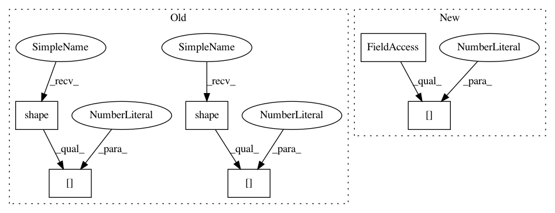

8259acbe363ecc589103678cc7402c2cf54ea564,gpflow/kernels/statics.py,White,K,#White#Any#Any#Any#,25
Before Change
def K(self, X, X2=None, presliced=False):
if X2 is None:
d = tf.fill(tf.stack([tf.shape(X)[0]]), tf.squeeze(self.variance))
return tf.matrix_diag(d)
else:
shape = tf.stack([tf.shape(X)[0], tf.shape(X2)[0]])
return tf.zeros(shape, dtype=X.dtype)
After Change
d = tf.fill((X.shape[0], ), tf.squeeze(self.variance))
return tf.linalg.diag(d)
else:
shape = [X.shape[0], X2.shape[0]]
return tf.zeros(shape, dtype=X.dtype)
In pattern: SUPERPATTERN
Frequency: 3
Non-data size: 6
Instances
Project Name: GPflow/GPflow
Commit Name: 8259acbe363ecc589103678cc7402c2cf54ea564
Time: 2019-02-22
Author: art.art.v@gmail.com
File Name: gpflow/kernels/statics.py
Class Name: White
Method Name: K
Project Name: tryolabs/luminoth
Commit Name: d52eb0bf3d6df25c70933321a841dac157806479
Time: 2018-03-20
Author: joaquin.alori@gmail.com
File Name: luminoth/models/ssd/ssd.py
Class Name: SSD
Method Name: _build
Project Name: tensorflow/models
Commit Name: ea3542c15b4fe085028db8de285be4e523deb9b5
Time: 2019-03-22
Author: adekboguszewski@gmail.com
File Name: research/deeplab/core/nas_network.py
Class Name:
Method Name: _build_nas_base
Project Name: GPflow/GPflow
Commit Name: 8259acbe363ecc589103678cc7402c2cf54ea564
Time: 2019-02-22
Author: art.art.v@gmail.com
File Name: gpflow/kernels/statics.py
Class Name: White
Method Name: K